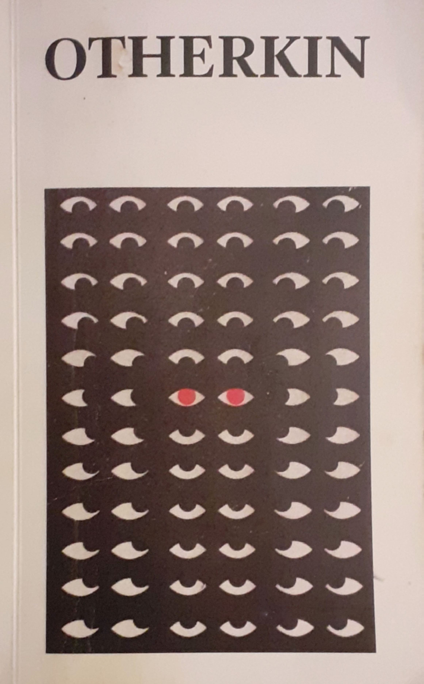
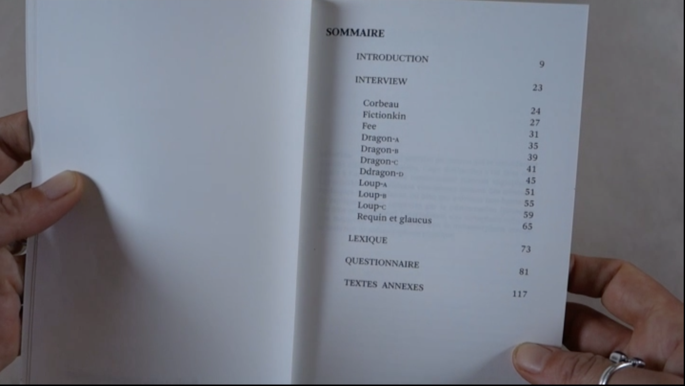
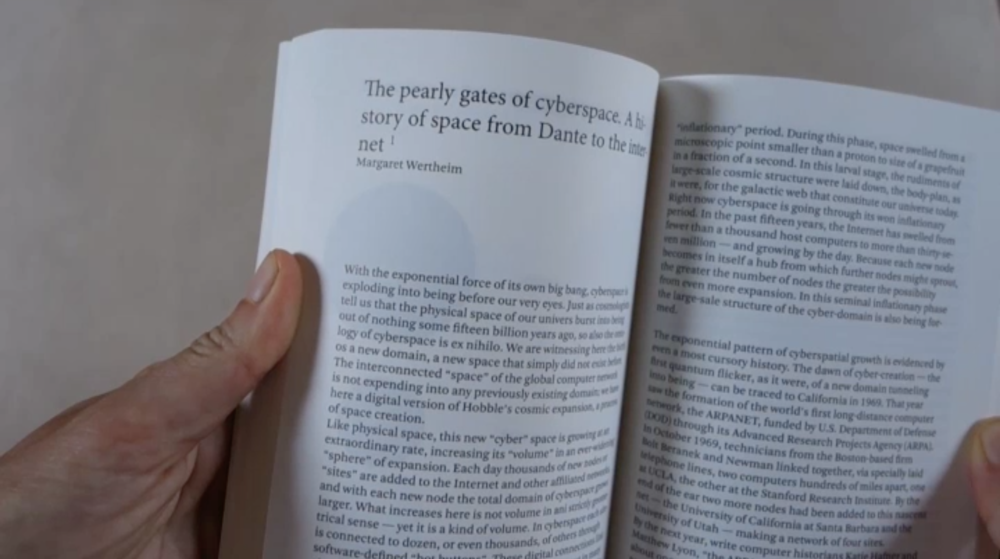

Otherkin
2019
This edition explores the Otherkin community through a documentary and speculative approach. In dialogue with their narratives, the work reflects on the concept of kin, online communities and forms of belonging that extend beyond conventional definitions of the human.
The project examines the tension between a desire for connection with nature and life within a highly technological society. It addresses technonatural identities, chosen families and the narrative possibilities of the cyborg.
Moving between research, fiction and philosophy, the edition questions how identities and relationships are constructed and narrated in the digital age.


